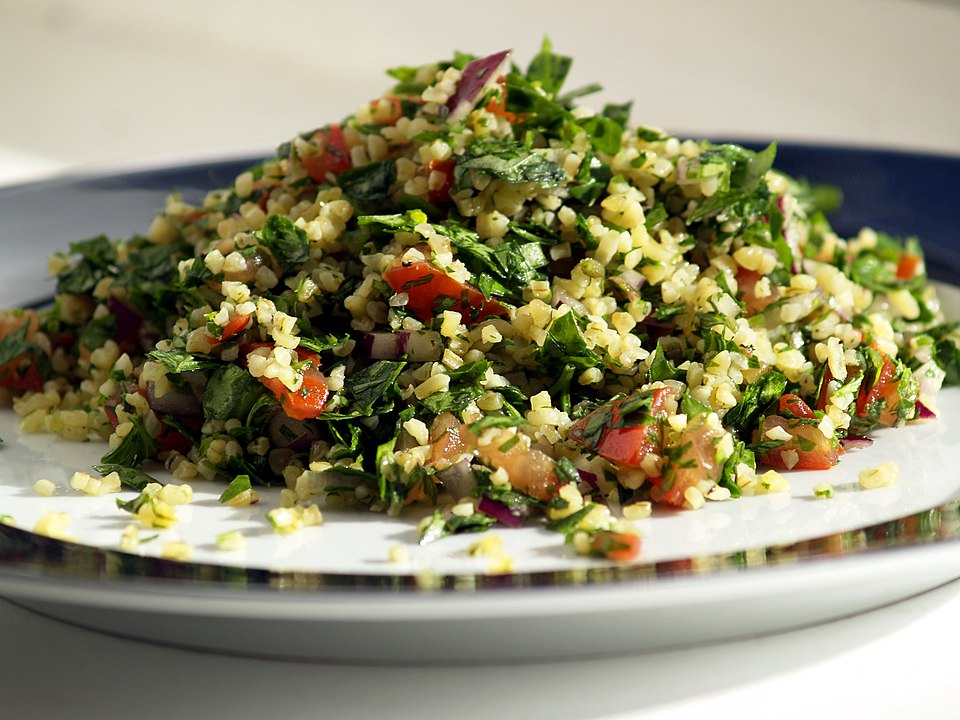

Tabulé

Description
Tabbouleh is a fresh and vibrant Middle Eastern salad made primarily with parsley, tomatoes,
bulgur, and a bright dressing of lemon juice and olive oil. It is known for its light texture and
refreshing flavor, making it a perfect side dish or a healthy main course.
Traditionally served cold, tabbouleh highlights simple, wholesome ingredients and balances citrusy, herbal, and
slightly nutty flavors. It pairs well with grilled meats, pita bread, or can be enjoyed on its own.
Ingredients
- 1 cup fresh parsley, finely chopped
- 1/2 cup bulgur wheat
- 2 medium tomatoes, diced
- 1/4 cup fresh mint, chopped
- 2 green onions, sliced
- 1/4 cup olive oil
- 2 tablespoons lemon juice
- Salt and pepper to taste
Preparation
- Place the bulgur wheat in a bowl and cover it with warm water. Let it soak for about 10–15 minutes, then drain
any excess water.
- Finely chop the parsley, mint, tomatoes, and green onions.
- In a large bowl, combine the soaked bulgur with the chopped vegetables.
- Add the olive oil and lemon juice, then mix everything well.
- Season with salt and pepper to taste.
- Let the salad rest in the refrigerator for at least 30 minutes before serving to allow the flavors to blend.
Back to Home